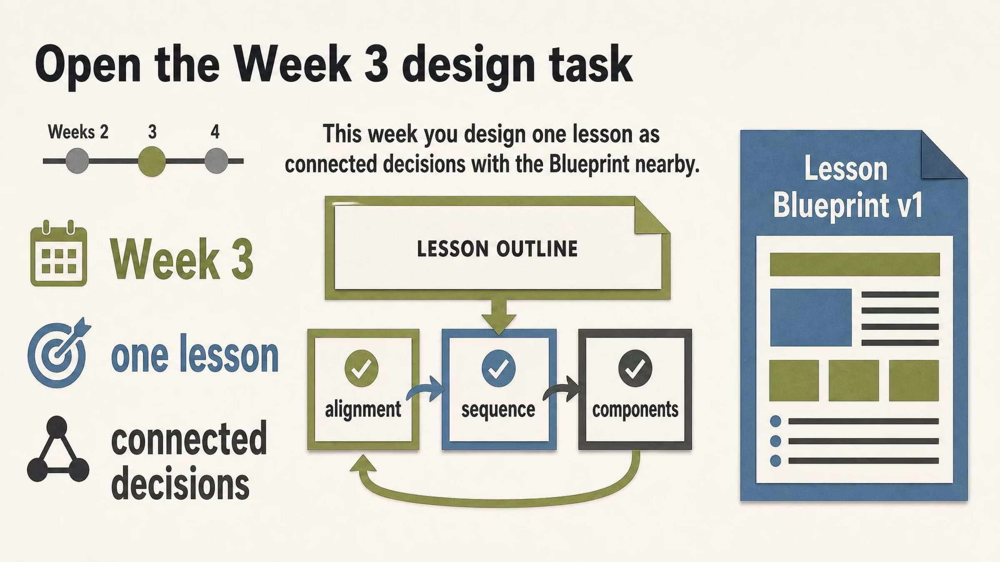

#1
PHS620-W03-BOXV02-U01
PHS620-W03-BOXV02-U01
creativecluster headCoherence pendingcard 1orientation landscape
Approved slide

[+]Asset status: present | Dimensions: 2400×1350
Motion review: Motion: static | n/a
Cluster c-u01Position establishInterstitial type n/aIsolation target n/aDevelop type n/aArc n/a
Script
Status: Attached
80 words@150 WPM 32.0shead narrationtiming orientationdensity mediumposition establishintent clear-guidanceintent serves master
First, anchor this week around one lesson and a chain of connected decisions. Then keep your Blueprint within reach so every point you hear can feed a concrete edit to your own design. The task is practical: link what learners must do to credible evidence, a practice path, feedback, and an access plan—so the sequence you build actually prepares them to perform. By the end, you’ll be able to justify how your choices cohere, not just list activities.
Script notes
NO PHOTO-REALISTIC IMAGES. Illustration, diagram, or graphic only. Never a photograph. Never a photoreal person or photoreal scene. NON-PHOTOREAL flat or paper-cut schematic only. No photographs. No photoreal people. No stock classroom. No Blueprint screenshot. The image is the slide. Title: Open the Week 3 design task. Caption, one complete sentence in large type: This week you design one lesson as connected decisions, with the Blueprint nearby. A simple lesson outline resolves into three connected groups. Large labels only: Week 3; Lesson Blueprint v1; one lesson; connected decisions; alignment; sequence; components. A small Weeks 2-4 tick with Week 3 lit. Leave empty paper around the Blueprint-nearby cue; do not paste a form. Faculty-designers are the audience; do not place Maya or CHW figures on this card. No module learning objectives. No assignment due date. No small body text. Large spaced English words only; never smash words.
Voice direction
Voice direction: using global/default settings
Evidence & provenance
- Source ref
- irene-pass1.lesson-plan.json#u01
- File path
- gary-pass2-studio/exports-ab-B/PHS620-W03-BOXV02-U01_variant_B.png
- Created
- 2026-09-11T03:24:06.223353+00:00
- Literal-visual source
- n/a
- Matched segments
- seg-01
- Narration refs
- narration-script.md#seg-01
- Visual refs
- 2
- Visual mode
- static-hold
- Visual file
- C:\Users\juanl\Documents\GitHub\course-DEV-IDE-with-AGENTS-hybrid\course-content\staging\tracked\source-bundles\phs-620-w03-box-v02-20260910\gary-pass2-studio\exports-ab-B\PHS620-W03-BOXV02-U01_variant_B.png
- Motion type
- static
- Motion status
- n/a
- Motion source
- n/a
- Motion duration
- n/a
- Runtime target (s)
- n/a
- Motion asset
- n/a
- Timing role
- orientation
- Content density
- medium
- Visual detail load
- medium
- Bridge type
- intro
- Behavioral intent
- clear-guidance
- Duration rationale
- Opening frame that names the task and orients designers to one lesson and connected decisions.
- Cluster position
- establish
- Interstitial type
- n/a
- Isolation target
- n/a
- Quality
- Vera None | Quinn None
Findings
No findings attached.